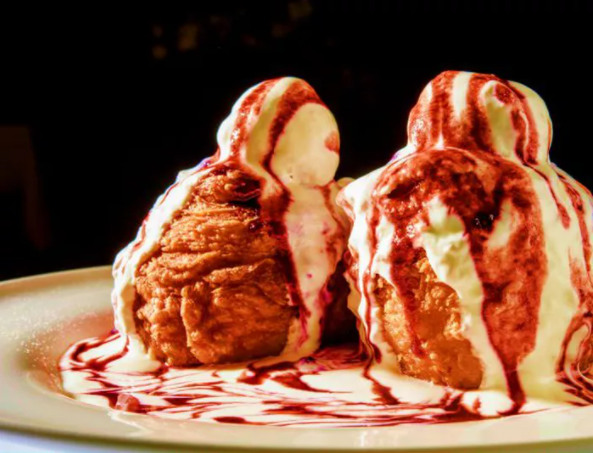

Papanasi

Papanaşi prăjiţi, cu dulceaţă şi smântână – desert tradițional românesc
(originar din Moldova, mai exact) extrem de popular.
Și nu e de mirare, sun absolut delicioși și se fac mai ușor decât am crede!
Ingredients
- 250 g branza de vaci
- 3 linguri faina
- 1 bucata ou
- 1 lingurita bicarbonat de sodiu
- 1 lingurita otet
- 1 ulei pentru prajit
- 300 ml smantana
- 1 ceasca gem dupa gust
Mod de preparare:
- Oul se bate bine într-un castron. Adaugă peste bicarbonatul stins în prealabil cu o linguriță de oțet.
- Adaugă brânza de vaci și amestecă bine. Apoi adaugă făina treptat până se încorporează toată, amestecând cu mâna.
- Din aluatul rezultat modelează un fel de gogoșele cu gaură la mijloc și un număr egal de biluțe din aceeași cocă.
- Într-o tigaie adâncă și mare care nu lipește, pune ulei la încins. Pune la prăjit atât gogoșelele, cât și biluțele, până se rumenesc frumos pe fiecare parte.
- Se scot pe un șervet de hârtie să se scurgă, apoi se ornează cu smântână și gem, ca în imagine.
Produs final